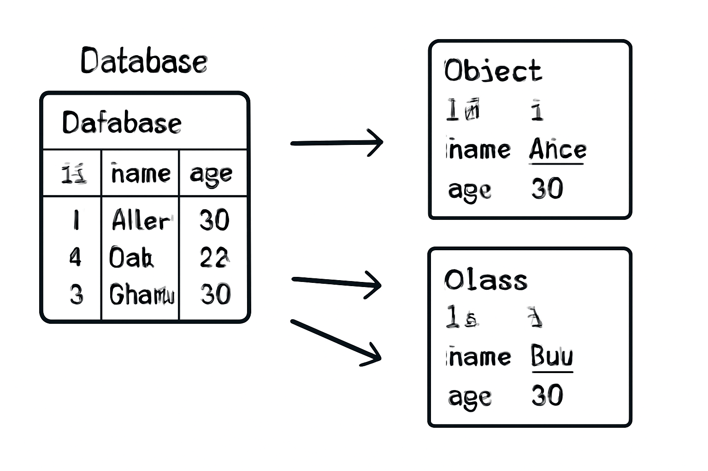

Why JPA? JPA vs JDBC
üîç What is JPA and ORM?
JPA stands for Java Persistence API. It is a specification that defines how Java objects can be mapped to database tables.
ORM means Object-Relational Mapping — a technique that allows us to interact with the database using Java objects instead of SQL queries.
With JPA, you don’t need to write boilerplate JDBC code. You define entities as Java classes, and JPA takes care of storing, retrieving, and managing them behind the scenes.
üöÄ The Evolution of Java Persistence
From raw JDBC to powerful JPA - let's explore the journey!
// JDBC - Manual and Error-Prone
public List<User> findAllUsers() {
List<User> users = new ArrayList<>();
String sql = "SELECT id, name, email FROM users";
try (Connection conn = DriverManager.getConnection(url, user, pass);
PreparedStatement stmt = conn.prepareStatement(sql);
ResultSet rs = stmt.executeQuery()) {
while (rs.next()) {
User user = new User();
user.setId(rs.getLong("id"));
user.setName(rs.getString("name"));
user.setEmail(rs.getString("email"));
users.add(user);
}
} catch (SQLException e) {
throw new RuntimeException("Database error", e);
}
return users;
}// JPA - Clean and Simple
@Repository
public interface UserRepository extends JpaRepository<User, Long> {
// That's it! All CRUD operations are automatically available
// findAll(), save(), findById(), deleteById(), etc.
// Custom queries are also simple
List<User> findByNameContaining(String name);
Optional<User> findByEmail(String email);
}Spring Boot JPA Setup
Dependencies
Add Spring Boot JPA and Database dependencies to your project
Configuration
Configure database connection in application.properties
Entity Classes
Create JPA entities with proper annotations
<dependencies>
<!-- Spring Boot JPA Starter -->
<dependency>
<groupId>org.springframework.boot</groupId>
<artifactId>spring-boot-starter-data-jpa</artifactId>
</dependency>
<!-- Database Driver (H2 for demo) -->
<dependency>
<groupId>com.h2database</groupId>
<artifactId>h2</artifactId>
<scope>runtime</scope>
</dependency>
<!-- MySQL Driver (Production) -->
<dependency>
<groupId>mysql</groupId>
<artifactId>mysql-connector-java</artifactId>
<scope>runtime</scope>
</dependency>
</dependencies># H2 Database (Development)
spring.datasource.url=jdbc:h2:mem:testdb
spring.datasource.driverClassName=org.h2.Driver
spring.datasource.username=sa
spring.datasource.password=password
spring.h2.console.enabled=true
# MySQL Database (Production)
# spring.datasource.url=jdbc:mysql://localhost:3306/myapp
# spring.datasource.username=root
# spring.datasource.password=yourpassword
# spring.datasource.driver-class-name=com.mysql.cj.jdbc.Driver
# JPA Configuration
spring.jpa.database-platform=org.hibernate.dialect.H2Dialect
spring.jpa.hibernate.ddl-auto=update
spring.jpa.show-sql=true
spring.jpa.properties.hibernate.format_sql=trueüéØ Quick Setup Checklist
Important Classes in Spring Boot JPA
@Entity
javax.persistence.Entity
Marks a class as a JPA entity - a Java class mapped to a database table
@Repository
org.springframework.stereotype.Repository
Marks a class as a Data Access Object (DAO) and enables exception translation
JpaRepository<T, ID>
org.springframework.data.jpa.repository.JpaRepository
Main interface providing CRUD operations and pagination support
EntityManager
javax.persistence.EntityManager
Primary interface for interacting with persistence context
import javax.persistence.*;
import java.time.LocalDateTime;
@Entity
@Table(name = "users")
public class User {
@Id
@GeneratedValue(strategy = GenerationType.IDENTITY)
private Long id;
@Column(name = "full_name", nullable = false, length = 100)
private String name;
@Column(unique = true, nullable = false)
private String email;
@Column(name = "created_at")
private LocalDateTime createdAt;
@PrePersist
public void prePersist() {
createdAt = LocalDateTime.now();
}
// Constructors, Getters, and Setters
public User() {}
public User(String name, String email) {
this.name = name;
this.email = email;
}
// ... getters and setters
}import org.springframework.data.jpa.repository.JpaRepository;
import org.springframework.data.jpa.repository.Query;
import org.springframework.data.repository.query.Param;
import org.springframework.stereotype.Repository;
@Repository
public interface UserRepository extends JpaRepository<User, Long> {
// Derived query methods
List<User> findByNameContaining(String name);
Optional<User> findByEmail(String email);
List<User> findByCreatedAtAfter(LocalDateTime date);
// Custom JPQL query
@Query("SELECT u FROM User u WHERE u.name LIKE %:name%")
List<User> searchByName(@Param("name") String name);
// Native SQL query
@Query(value = "SELECT * FROM users WHERE email = ?1", nativeQuery = true)
User findByEmailNative(String email);
}üÜö JPQL vs Native Query - What‚Äôs the Difference?
Both are used for custom queries in JPA, but they serve different needs:
| Aspect | JPQL | Native Query |
|---|---|---|
| Query Language | Object-oriented (based on entities) | Raw SQL (based on tables/columns) |
| Database Independence | Portable across databases | DB-specific (e.g., MySQL syntax) |
| Ease of Use | Cleaner and safer (typed) | More control, but more error-prone |
| Use Case | Most business logic queries | Complex joins, stored procedures, performance tuning |
Analogy: JPQL is like using NamedParameterJdbcTemplate (abstracted, safe), while NativeQuery is like JdbcTemplate (raw but powerful).
CRUD Operations Examples
CREATE
Add new records to the database
READ
Retrieve and query existing records
UPDATE
Modify existing database records
DELETE
Remove records from the database
import org.springframework.beans.factory.annotation.Autowired;
import org.springframework.stereotype.Service;
import org.springframework.transaction.annotation.Transactional;
@Service
@Transactional
public class UserService {
@Autowired
private UserRepository userRepository;
// CREATE
public User createUser(String name, String email) {
User user = new User(name, email);
return userRepository.save(user);
}
// READ
public List<User> getAllUsers() {
return userRepository.findAll();
}
public Optional<User> getUserById(Long id) {
return userRepository.findById(id);
}
public List<User> searchUsers(String name) {
return userRepository.findByNameContaining(name);
}
// UPDATE
public User updateUser(Long id, String newName, String newEmail) {
User user = userRepository.findById(id)
.orElseThrow(() -> new RuntimeException("User not found"));
user.setName(newName);
user.setEmail(newEmail);
return userRepository.save(user);
}
// DELETE
public void deleteUser(Long id) {
userRepository.deleteById(id);
}
public long getUserCount() {
return userRepository.count();
}
}Repository Interface Methods
üîç Method Name Query Generation
Spring Data JPA automatically generates queries from method names!
public interface UserRepository extends JpaRepository<User, Long> {
// Simple property queries
List<User> findByName(String name);
List<User> findByEmail(String email);
List<User> findByNameAndEmail(String name, String email);
// Like queries
List<User> findByNameContaining(String name);
List<User> findByNameStartingWith(String prefix);
List<User> findByNameEndingWith(String suffix);
// Comparison queries
List<User> findByIdGreaterThan(Long id);
List<User> findByCreatedAtBetween(LocalDateTime start, LocalDateTime end);
List<User> findByIdIn(List<Long> ids);
// Ordering and limiting
List<User> findByNameOrderByCreatedAtDesc(String name);
List<User> findTop5ByOrderByCreatedAtDesc();
User findFirstByOrderByIdAsc();
// Existence and counting
boolean existsByEmail(String email);
long countByNameContaining(String name);
// Deletion
void deleteByEmail(String email);
List<User> removeByNameContaining(String name);
}public interface UserRepository extends JpaRepository<User, Long> {
// JPQL Queries
@Query("SELECT u FROM User u WHERE u.name LIKE %:name% ORDER BY u.createdAt DESC")
List<User> findUsersByNamePattern(@Param("name") String name);
@Query("SELECT u FROM User u WHERE u.createdAt > :date")
List<User> findRecentUsers(@Param("date") LocalDateTime date);
@Query("SELECT COUNT(u) FROM User u WHERE u.email LIKE %:domain%")
long countUsersByEmailDomain(@Param("domain") String domain);
// Native SQL Queries
@Query(value = "SELECT * FROM users u WHERE u.full_name = ?1 LIMIT 1", nativeQuery = true)
User findByNameNative(String name);
@Query(value = "SELECT u.* FROM users u WHERE YEAR(u.created_at) = :year", nativeQuery = true)
List<User> findUsersByYear(@Param("year") int year);
// Modifying Queries
@Modifying
@Query("UPDATE User u SET u.name = :name WHERE u.id = :id")
int updateUserName(@Param("id") Long id, @Param("name") String name);
@Modifying
@Query("DELETE FROM User u WHERE u.createdAt < :date")
int deleteOldUsers(@Param("date") LocalDateTime date);
}public interface UserRepository extends JpaRepository<User, Long> {
// Pagination and Sorting
Page<User> findByNameContaining(String name, Pageable pageable);
// Using Pageable in service
public Page<User> getUsers(int page, int size, String sortBy) {
Pageable pageable = PageRequest.of(page, size, Sort.by(sortBy));
return userRepository.findAll(pageable);
}
// Projections - Only fetch specific fields
@Query("SELECT u.name, u.email FROM User u")
List<Object[]> findNamesAndEmails();
// Interface-based projection
interface UserSummary {
String getName();
String getEmail();
LocalDateTime getCreatedAt();
}
List<UserSummary> findAllProjectedBy();
// Specifications for complex queries
Specification<User> hasName(String name) {
return (root, query, cb) -> cb.like(root.get("name"), "%" + name + "%");
}
Specification<User> createdAfter(LocalDateTime date) {
return (root, query, cb) -> cb.greaterThan(root.get("createdAt"), date);
}
// Usage: userRepository.findAll(hasName("John").and(createdAfter(yesterday)));
}